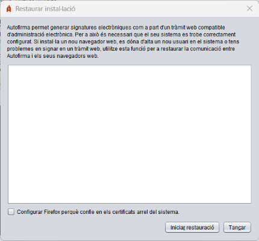

Des d'este panell és possible restaurar la instal·lació d'Autofirma per a corregir problemes que afecten de la comunicació entre els navegadors web i l'aplicació. Els casos més comuns són: s'ha instal·lat un nou navegador web després de la instal·lació d'Autofirma, s'han creat més usuaris en l'equip o més perfils d'usuari per a un navegador, s'ha reinicialitzat el perfil d'un usuari, etc.

En activar esta opció (només disponible en Windows i macOS) es permet que el procés de restauració configure Firefox de tal forma que el navegador confiarà en els certificats instal·lats en el magatzem de certificats arrel del sistema (Autoritats de confiança). D'esta manera Autofirma continuarà funcionant en este navegador encara que es configuren nous perfils, es netege el perfil o si s'elimina el certificat de confiança del magatzem del navegador. Si es deixa esta casella desactivada s'eliminarà esta configuració en cas que ja estiguera establida.
En polsar el botó "Iniciar restauració" s'iniciarà el procés de restauració.
ADVERTIMENT PER A USUARIS DE MICROSOFT WINDOWS: Si en executar el procés d'instal·lació apareguera un missatge indicant "L'execució del codi no pot continuar perquè no es va trobar VCRUNTIME140.dll. Este problema es pot solucionar reinstal·lant el programa", haurà d'instal·lar l'entorn d'execució redistribuible de Microsoft Visual C++ 2015 i tornar a executar l'operació per a poder completar la restauració.